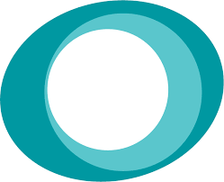

Zen

Reminder : Goals of Zen
- Helping dojos
- Empowering children
Frameworks
Back-end


Archi
"Micro"-services
Frameworks
Front-end

Integrations
Setup
node v0.10 :'(
https://github.com/CoderDojo/cp-local-development
npm install && ./localdev run zen
no, it doesn't install nodebb and badgekit (yet)Dev ?
workspace-zen/*
Mailtrap
That's it !
Questions ?